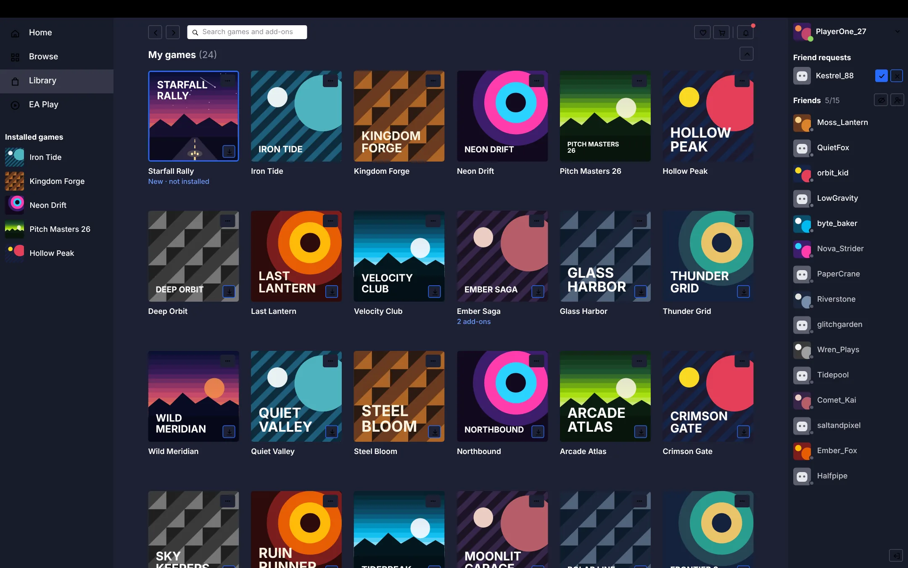

Installing and launching a game in the EA app
Clickable prototype · Research Brief 5
Players lost track between installing and launching, and the launch error named neither a cause nor a fix. This prototype shows the redesign: one Install, Verify, Play card; an error that says what is wrong; and Repair, Reinstall and Cancel right inside it. With it, NASA-TLX frustration fell from 90 to 20, and 6 of 6 participants recovered without help (2 of 6 before).
Click what you would use (Starfall Rally, Install, Play, Repair), or step through with Next and Back. Clicking anywhere else shows what is clickable.

A recreation made for this portfolio: each screen is an image, with clickable areas where the prototype’s links are. The EA app belongs to Electronic Arts; this prototype is not affiliated with or endorsed by them. The games, artwork, player names and friends shown are made up, and the icons are generic.